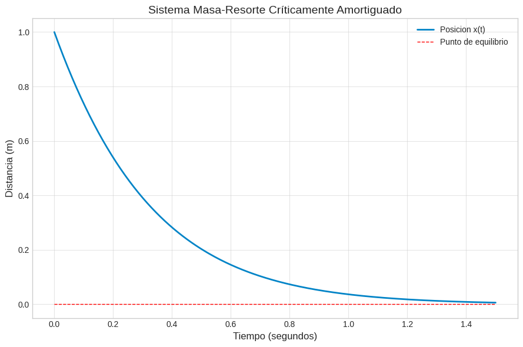
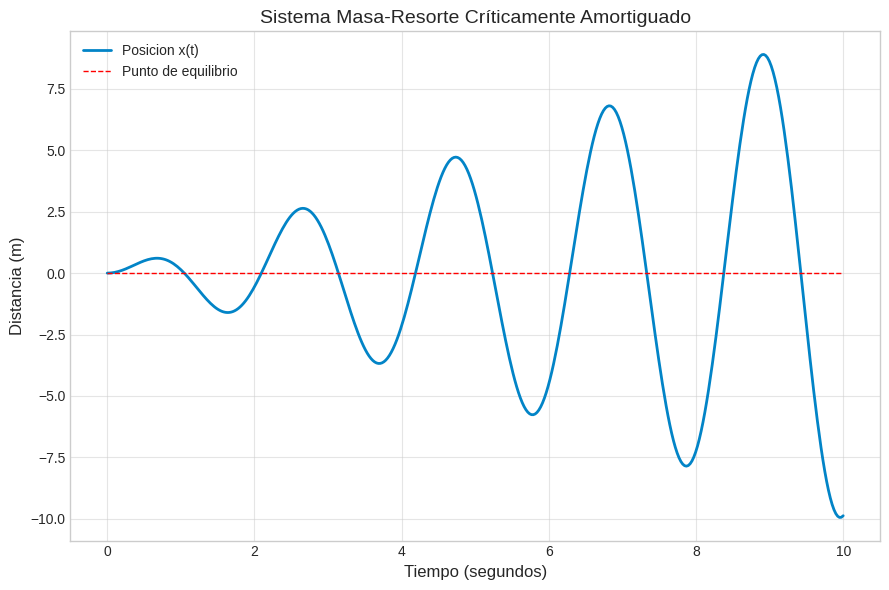
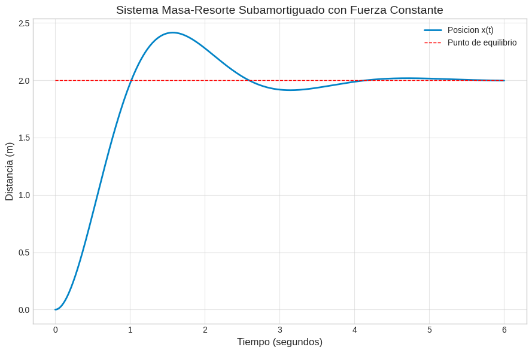

Las ecuaciones diferenciales lineales de segundo orden con coeficientes constantes constituyen el pilar fundamental para modelar sistemas físicos oscilatorios. Entre las aplicaciones más emblemáticas se encuentran los sistemas mecánicos masa-resorte y los circuitos eléctricos RLC. Sorprendentemente, ambos fenómenos comparten la misma estructura matemática subyacente, lo que demuestra la profunda unificación de la física a través de las ecuaciones diferenciales.
Consideremos un cuerpo de masa \(m\) sujeto a un resorte vertical u horizontal con constante de restitución \(k\). Al desplazar la masa de su posición de equilibrio una distancia \(x(t)\), el resorte ejerce una fuerza restauradora expresada por la ley de Hooke \(F_R = -kx\). Si además el sistema experimenta una resistencia del medio proporcional a la velocidad instantánea, introducimos una fuerza de amortiguamiento \(F_A = -\beta \frac{dx}{dt}\), donde \(\beta > 0\) es la constante de amortiguamiento.
Aplicando la Segunda Ley de Newton \(\sum F = m a = m \frac{d^2x}{dt^2}\) bajo la presencia de una fuerza externa impulsora \(F(t)\), obtenemos la ecuación diferencial ordinaria del movimiento:
$$m \frac{d^2x}{dt^2} + \beta \frac{dx}{dt} + k x = F(t)$$Al dividir entre la masa \(m\), la ecuación se expresa habitualmente en su forma canónica:
$$\frac{d^2x}{dt^2} + 2\lambda \frac{dx}{dt} + \omega^2 x = f(t)$$donde \(\lambda = \frac{\beta}{2m}\) representa el coeficiente de amortiguamiento atenuado, \(\omega = \sqrt{\frac{k}{m}}\) es la frecuencia natural del sistema no amortiguado y \(f(t) = \frac{F(t)}{m}\).
El comportamiento cualitativo del sistema depende directamente del discriminante de la ecuación característica \(r^2 + 2\lambda r + \omega^2 = 0\), dado por \(\lambda^2 - \omega^2 = \frac{\beta^2 - 4mk}{4m^2}\):
Un circuito eléctrico en serie que contiene un inductor de inductancia \(L\) (henrios), un resistor de resistencia \(R\) (ohmios) y un capacitor de capacitancia \(C\) (faradios), conectado a una fuente de voltaje variable \(E(t)\) (voltios), se rige por la Segunda Ley de Kirchhoff: la suma de las caídas de potencial a lo largo del circuito cerrado es igual al voltaje suministrado.
Expresando las caídas de voltaje en términos de la carga eléctrica \(q(t)\) en el capacitor, donde la corriente instantánea cumple \(i(t) = \frac{dq}{dt}\), se llega directamente a la ecuación diferencial de segundo orden:
$$L \frac{d^2q}{dt^2} + R \frac{dq}{dt} + \frac{1}{C} q = E(t)$$Si diferenciamos esta ecuación respecto al tiempo \(t\), obtenemos la formulación equivalente para la corriente eléctrica \(i(t)\):
$$L \frac{d^2i}{dt^2} + R \frac{di}{dt} + \frac{1}{C} i = E'(t)$$A continuación se presenta la correspondencia formal entre los elementos mecánicos y eléctricos:
| Sistema Mecánico Masa-Resorte | Sistema Eléctrico Circuito RLC |
|---|---|
| Desplazamiento \(x(t)\) | Carga eléctrica \(q(t)\) |
| Velocidad \(v(t) = x'(t)\) | Corriente eléctrica \(i(t) = q'(t)\) |
| Masa \(m\) | Inductancia \(L\) |
| Constante de amortiguamiento \(\beta\) | Resistencia \(R\) |
| Constante de resorte \(k\) | Recíproco de la capacitancia \(1/C\) |
| Fuerza externa \(F(t)\) | Voltaje de la fuente \(E(t)\) |
Iniciamos determinando los parámetros físicos del sistema a partir de las condiciones dadas. La masa se obtiene dividiendo el peso entre la gravedad en el sistema inglés, es decir, $$m = \frac{W}{g} = \frac{8}{32} = \frac{1}{4}\text{ slug}.$$ Por su parte, la constante del resorte se deduce de la Ley de Hooke al considerar el estiramiento en equilibrio, resultando $$k = \frac{W}{s} = \frac{8}{2} = 4\text{ lb/ft}.$$ El coeficiente de amortiguamiento es $$\beta = 2\text{ lb}\cdot\text{s/ft}$$
Sustituyendo estos valores en la ecuación general del movimiento diferencial obtenemos $$\frac{1}{4}x'' + 2x' + 4x = 0.$$ Para simplificar los coeficientes, multiplicamos toda la ecuación por \(4\), lo que conduce a la forma estándar $$x'' + 8x' + 16x = 0.$$
Resolvemos la ecuación característica asociada $$r^2 + 8r + 16 = (r+4)^2=0. \implies r_{1}=r_{2}=-4, $$ confirmando que el sistema se encuentra en un régimen críticamente amortiguado. La solución general adopta la forma $$x(t) = C_1 e^{-4t} + C_2 t e^{-4t}.$$
Para determinar las constantes arbitrarias aplicamos las condiciones iniciales del problema. Tomando la convención de que las posiciones por debajo del equilibrio son positivas y las velocidades ascendentes son negativas, establecemos \(x(0) = 1\) y \(x'(0) = -3\). Al evaluar \(x(0) = 1\) en la solución general encontramos de inmediato que \(C_1 = 1\).
Calculamos la primera derivada de la función de posición mediante la regla del producto, obteniendo $$x'(t) = -4C_1 e^{-4t} + C_2 e^{-4t} - 4C_2 t e^{-4t}.$$ Evaluando en \(t = 0\) y sustituyendo el valor de \(C_1\), tenemos $$x'(0) = -4(1) + C_2 = -3 \implies C_2 = 1. $$
Sustituyendo ambas constantes en la solución general, encontramos:r:
$$ x(t) = e^{-4t} + t e^{-4t} = (1 + t)e^{-4t}\text{ ft} $$La figura siguiente muestra la gráfica de la solución

Planteamos la ecuación diferencial del movimiento sustituyendo los datos del problema $$m = 1, \beta = 0, k = 9, F(t) = 6 \cos(3t),$$ lo que resulta en la ecuación no homogénea $$x'' + 9x = 6 \cos(3t).$$
Comenzamos resolviendo la ecuación homogénea asociada $$x'' + 9x = 0.$$ Su polinomio característico es $$r^2 + 9 = 0\implies r = \pm 3i,$$ por lo que la solución complementaria es $$x_c(t) = C_1 \cos(3t) + C_2 \sin(3t).$$ La frecuencia natural de oscilación del sistema es $$\omega = 3\text{ rad/s}.$$
Observamos que la frecuencia de la fuerza externa coincide exactamente con la frecuencia natural del sistema. Por lo tanto, al proponer la solución particular mediante el método de coeficientes indeterminados, debemos multiplicar por la variable independiente \(t\) para evitar duplicación con los términos homogéneos, proponemos entonces: $$x_p(t) = t(A \cos(3t) + B \sin(3t))$$
Derivamos la función propuesta dos veces para sustituirla en la ecuación diferencial. La primera derivada resulta $$x_p'(t) = A \cos(3t) + B \sin(3t) + t(-3A \sin(3t) + 3B \cos(3t)),$$ y la segunda derivada es $$x_p''(t) = -6A \sin(3t) + 6B \cos(3t) - 9t(A \cos(3t) + B \sin(3t)).$$
Al sustituir \(x_p''(t)\) y \(x_p(t)\) en la ecuación diferencial \(x'' + 9x = 6 \cos(3t)\), los términos proporcionales a \(t\) se cancelan mutuamente, reduciéndose la expresión a $$-6A \sin(3t) + 6B \cos(3t) = 6 \cos(3t).$$ Igualando los coeficientes de las funciones seno y coseno obtenemos $$-6A = 0 \implies A = 0 \quad \hbox{ y } \quad 6B = 6 \implies B = 1.$$ La solución particular es: $$x_p(t) = t \sin(3t).$$
La solución general del sistema es: $$x(t) = C_1 \cos(3t) + C_2 \sin(3t) + t \sin(3t).$$ Aplicando la condición inicial de posición \(x(0) = 0\), hallamos directamente \(C_1 = 0\). Derivando la expresión y evaluando la velocidad inicial \(x'(0) = 3C_2 = 0\), por lo cual \(C_2 = 0\).
Finalmente la solución del sistema está expresada por:
$$ x(t) = t \sin(3t)\text{ m} $$Este resultado demuestra teóricamente el fenómeno de resonancia pura: la amplitud de las oscilaciones incrementa linealmente sin límite de forma proporcional al tiempo \(t\), lo cual conduciría en la práctica a la ruptura física del resorte o del sistema mecánico. La figura siguiente muestra la gráfica de la solución

Sustituimos los componentes eléctricos en la ecuación diferencial de la carga $$L q'' + R q' + \frac{1}{C} q = E(t) \implies 0.25 q'' + 10 q' + \frac{1}{0.01} q = 100 \sin(10t) . $$ Al simplificar el término constante del capacitor \(\frac{1}{0.01} = 100\) y multiplicar toda la ecuación por \(4\), se obtiene $$q'' + 40 q' + 400 q = 400 \sin(10t).$$
Resolvemos en primer lugar la parte homogénea \(q'' + 40 q' + 400 q = 0\). La ecuación característica asociada es: $$ r^2 + 40r + 400 = (r + 20)^2 = 0 \implies r _1=r_2= -20, $$, por lo cual $$ q_c(t) = C_1 e^{-20t} + C_2 t e^{-20t}. $$
Para la solución particular en estado estacionario proponemos la combinación sinusoidal \ $$q_p(t) = A \cos(10t) + B \sin(10t).$$ Calculamos sus derivadas sucesivas: $$ q_p'(t) = -10A \sin(10t) + 10B \cos(10t) $$ y $$q_p''(t) = -100A \cos(10t) - 100B \sin(10t).$$
Sustituimos estas derivadas en la ecuación diferencial y agrupamos términos semejantes respecto a \(\cos(10t)\) y \(\sin(10t)\). Esto nos conduce al sistema de ecuaciones lineales de dos variables: $$ \begin{eqnarray} 300A + 400B &=&6 0 \\ -400A + 300B &=& 400 \end{eqnarray} $$ De la primera ecuación obtenemos \(A = -\frac{4}{3}B\); al reemplazar en la segunda resulta $$\frac{16}{3}B + 3B = 4 \implies \frac{25}{3}B = 4 \implies (B = \frac{12}{25} = 0.48 $$ y consecuentemente $$A = -\frac{16}{25} = -0.64.$$
La solución particular es: $$q_p(t) = -0.64 \cos(10t) + 0.48 \sin(10t).$$. La solución general ueda definida como $$ q(t) = C_1 e^{-20t} + C_2 t e^{-20t} - 0.64 \cos(10t) + 0.48 \sin(10t).$$
Aplicandolas condiciones iniciales para determinar las constantes se tiene. Evaluando la carga inicial $$ q(0) = C_1 - 0.64 = 0\ \implies C_1 = 0.64$$ Derivamos la función de carga para obtener la corriente $$(i(t) = q'(t) = -20 C_1 e^{-20t} + C_2 e^{-20t} - 20 C_2 t e^{-20t} + 6.4 \sin(10t) + 4.8 \cos(10t).$$ Evaluando en \(t = 0\) con \(i(0) = 0\), obtenemos $$ -20(0.64) + C_2 + 4.8 = 0 \implies -12.8 + C_2 + 4.8 = 0\implies C_2 = 8. $$
Sustituyendo estos coeficientes obtenemos la solución completa para la carga del capacitor:
$$ q(t) = 0.64 e^{-20t} + 8 t e^{-20t} - 0.64 \cos(10t) + 0.48 \sin(10t)\text{ C} $$Sustituimos los coeficientes físicos en la ecuación diferencial de segundo orden, obteniendo la ecuación no homogénea $$x'' + 2x' + 5x = 10.$$
Para la parte homogénea \(x'' + 2x' + 5x = 0\), tenemos la ecuación característica $$r^2 + 2r + 5 =(r+1)^2+4=0 \implies r = -1 \pm 2i. $$ Se tiene un régimen subamortiguado con solución dada por $$x_c(t) = e^{-t}(C_1 \cos(2t) + C_2 \sin(2t)).$$
Dado que la fuerza externa es una constante, proponemos una solución particular constante \(x_p(t) = A\). Sustituyendo en la ecuación diferencial tenemos $$0 + 2(0) + 5A = 10 \implies A = 2.$$ La solución particular representa la nueva posición de equilibrio estático bajo la fuerza aplicada.
Escribimos la solución general como: $$x(t) = e^{-t}(C_1 \cos(2t) + C_2 \sin(2t)) + 2.$$ Aplicando la condición de posición inicial \(x(0) = 0\), obtenemos $$C_1 + 2 = 0 \implies C_1 = -2$$
Derivando a función de posición mediante la regla del producto obtenemos: $$x'(t) = -e^{-t}(C_1 \cos(2t) + C_2 \sin(2t)) + e^{-t}(-2C_1 \sin(2t) + 2C_2 \cos(2t)).$$ Al evaluar la velocidad inicial \(x'(0) = 0\), se tiene $$-C_1 + 2C_2 = 0 \implies -(-2) + 2C_2 = 0 \implies C_2 = -1.$$
Finalmente, a trayectoria de la masa en el tiempo está dada por::
$$ x(t) = 2 - e^{-t}\left(2 \cos(2t) + \sin(2t)\right)\text{ m} $$La figura siguiente muestra la gráfica de la solución

Para dominar la interpretación física de las ecuaciones diferenciales de segundo orden y verificar la correcta formulación de problemas de valor inicial, puedes utilizar el siguiente prompt estructurado en un modelo de IA:
Actúa como un profesor universitario experto en Física y Ecuaciones Diferenciales.
Genera un problema práctico de aplicación (sistema masa-resorte o circuito RLC) indicando los parámetros físicos y las condiciones iniciales.
Pídeme que formule la ecuación diferencial y determine el régimen de amortiguamiento (sobreamortiguado, críticamente amortiguado o subamortiguado).
Una vez que te envíe mi respuesta, analiza minuciosamente mi razonamiento, señala posibles errores de conversión de unidades o signos, y proporciona la solución completa paso a paso de forma continua.
Selecciona la opción correcta para evaluar tu comprensión sobre las aplicaciones de ecuaciones diferenciales de segundo orden.